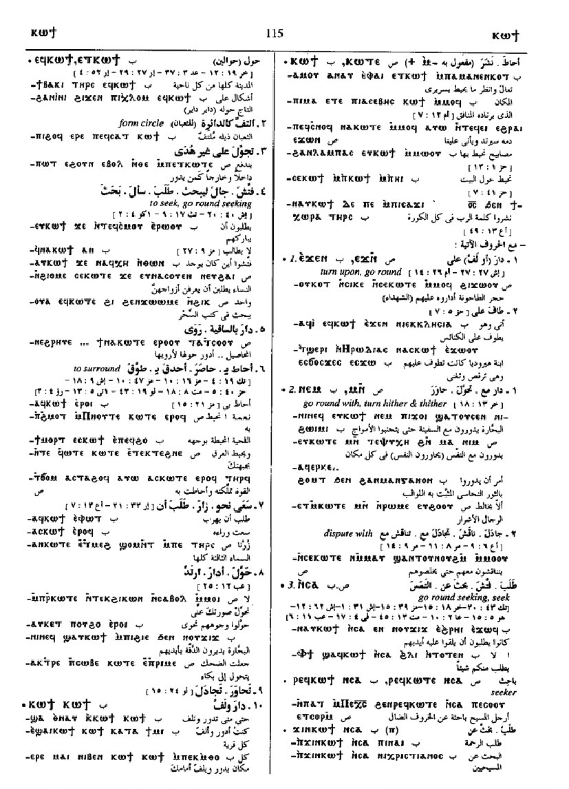
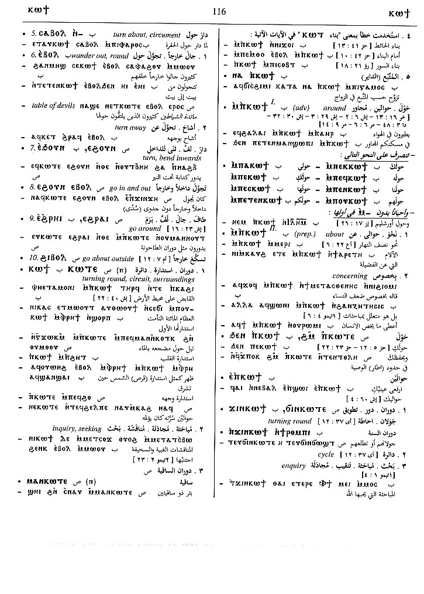
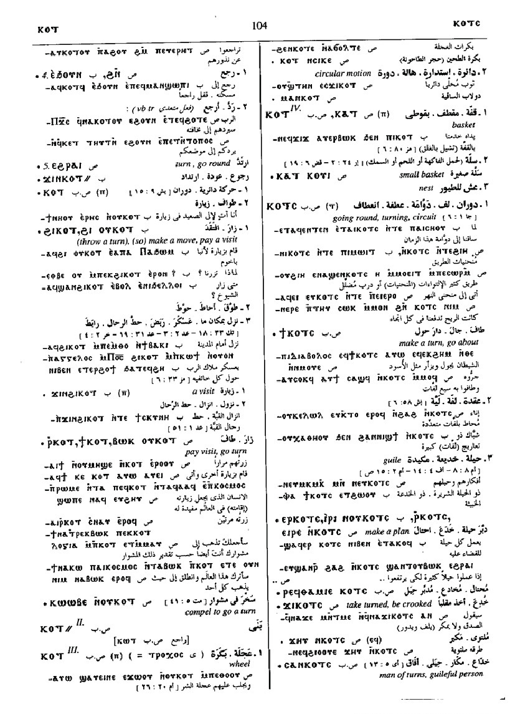

(verb)
intr:
― turn, go round [κυκλουν, στρεφεσθαι]
― go round with waterwheel, water
― form circle
― wander, stray
― go about seeking, seek
qual: S (archaic) turned
iteration S,B continue to turn, seek
tr:
― turn, often of face
― surround
refl (oftenest) with suff or ⲙⲙⲟ=, turn self, return, repeat [στρεφεσθαι]
― turn, go round [κυκλουν, στρεφεσθαι]
― go round with waterwheel, water
― form circle
― wander, stray
― go about seeking, seek
qual: S (archaic) turned
iteration S,B continue to turn, seek
tr:
― turn, often of face
― surround
refl (oftenest) with suff or ⲙⲙⲟ=, turn self, return, repeat [στρεφεσθαι]
(S, A, sA, O)
ⲕⲱⲧⲉ
(B, F) ⲕⲱϯ
(O) ⲕⲟϯ
(S, B) ⲕⲉⲧ-
(F) ⲕⲁⲧ-
(S, B) ⲕⲟⲧ=
(A, sA, F) ⲕⲁⲧ=
(S) ⲕⲏⲧ+
(B, F) ⲕⲱϯ
(O) ⲕⲟϯ
(S, B) ⲕⲉⲧ-
(F) ⲕⲁⲧ-
(S, B) ⲕⲟⲧ=
(A, sA, F) ⲕⲁⲧ=
(S) ⲕⲏⲧ+
| intr :5556 | Crum: 124a | ||||||||
| ― ⲉ- | (obj), surround
[κυκλουν, περιεχειν, περιαγειν,
περιτιθεναι]
seek, visit [ζητειν]4303 |
Crum: 124b | |||||||
| With following preposition:4304 | Crum: 125a | ||||||||
| ― ⲉϫⲛ-, ― ⲉϫⲉⲛ- | turn upon, go round, among [στρεφεσθαι, περιαγειν]4305 | ||||||||
| ― ⲙⲛ-, ― ⲛⲉⲙ- | go round with, turn hither &
thither [κυκλουν]
inquire of, dispute with B4306 |
||||||||
| ― ⲛⲥⲁ- | go round seeking, seek [ζητειν, επακολουθειν, επερωταν]4307 | Crum: 125b | |||||||
| (S) ⲣⲉϥⲕ. {ⲛⲥⲁ-} | seeker [εφευρετησ]4308 | ||||||||
| (B) ϫⲓⲛⲕ. {ⲛⲥⲁ-} | search after4309 | ||||||||
| (B) ― ⲛⲧⲉⲛ- | seek, beg from4310 | ||||||||
| (B) ― ⲥⲁⲃⲟⲗ ⲛ- | turn about, circumcent [κατακαμπτειν]4311 | ||||||||
| With following adverb:4312 | |||||||||
| ― ⲉⲃⲟⲗ | (verb)
intr: ― wander out, round, return ― reach out, attain to intr: turn away refl, same meanings4313 |
||||||||
| ― ⲉⲡⲁϩⲟⲩ | (verb)
tr: turn back refl4314 |
||||||||
| ― ⲉϩⲟⲩⲛ, ― ⲉϧⲟⲩⲛ | (verb)
intr: turn, bend inwards tr: turn, bring round refl, return4315 |
Crum: 126a | |||||||
| ⲕ. {ⲉϩⲟⲩⲛ} ⲉⲃⲟⲗ | go in & out4316 | ||||||||
| ― ⲉϩⲣⲁⲓ, ― ⲉϩⲣⲏⲓ | (verb)
intr: turn, go round refl, return4317 |
||||||||
| (S, A) ― ϩⲓⲃⲟⲗ | go about outside4318 | ||||||||
| ― | turning round, circuit,
surroundings [περιχωρα, γυροσ, περιοχη]
turning of water wheel ⲙⲁ ⲛⲕ. , turning place, water-wheel, saqiyah seeking, inquiry ? confused with ⲕⲱⲧ, building adverbial ⲙⲡⲕ., round about as prep, about, concerning597 |
||||||||
| ⲙⲁ ⲛⲕ. | turning place, water-wheel, saqiyah5557 | ||||||||
| ⲙⲡⲕ. | adverbial, round about [κυκλω, περικυκλω, κυκλοθεν]8785 | Crum: 126b | |||||||
| ϩⲙⲛⲕ., ϧⲉⲛⲛⲕ. | [κυκλω]5558 | ||||||||
| ⲉⲡⲕ. | [κυκλω]5559 | ||||||||
| (S, B) ϭⲓⲛⲕ., ϫⲓⲛⲕ. (ⲡ/ⲧ) | (noun male/female)
f S, m B turning round, cycle enquiry598 |
||||||||
| (S, B)
ⲕⲟⲧ
(ⲡ)
(Sa) ⲕⲁⲧ (ⲡ) |
(noun male)
circular motion, turn, visit [περιοδοσ]599 |
||||||||
| (S, Sa) ⲃⲱⲕ ⲟⲩⲕ. | pay visit, go turn4319 | ||||||||
| (S) ⲣ ⲕ. | sim4320 | ||||||||
| (S) ϯ ⲕ. | sim4321 | ||||||||
| (S) ⲕⲱⲱⲃⲉ ⲛⲟⲩⲕ. | compel (to go) a turn4322 | ||||||||
| (S, B) ϩⲓ ⲕ., ϩⲓ ⲟⲩⲕ. | (S once), lit throw a
turn, so make a move, pay visit
encompass, encamp4323 |
Crum: 127a | |||||||
| (B) ϩⲓ ⲕ. ⲉⲃⲟⲗ | pay visit4324 | ||||||||
| (B) ϫⲓⲛϩⲓ ⲕ. (ⲡ) | (noun male)
visit4325 |
||||||||
| (S, B)
ⲕⲟⲧ
(ⲡ)
(S, Sa, A) ⲕⲁⲧ (ⲡ) |
(noun male)
wheel [τροχοσ]600 |
||||||||
| (S, B)
ⲕⲟⲧ
(ⲡ)
(S, B, F) ⲕⲁⲧ (ⲡ) |
(noun male)
basket [κοφινοσ]601 |
||||||||
| (B) ⲕⲟⲧ (noun) | (noun)
602 |
||||||||
| (S, B)
ⲕⲟⲧⲥ
(ⲧ)
(A) ⲕⲁⲧⲥ (ⲧ) |
(noun female)
going round, turning circuit twist, knot crookedness, guile603 |
||||||||
| (S, B) ⲉⲓⲣⲉ ⲕ., ⲣ ⲕ. | make a turn, plan, circumvent609 | Crum: 127b | |||||||
| (S) ϯ ⲕ. | make a turn, go about [ανακαμπτειν]604 | ||||||||
| (S, A) ϫⲓ ⲕ. | take turn, be crooked605 | ||||||||
| ⲥⲁ ⲛⲕ. | man of turns, guileful person606 | ||||||||
| (B) ⲕⲟⲧⲥⲓ (ⲧ) | (noun female)
circuit ?607 |
||||||||
| (S) ⲕⲱⲧϥ (noun) | (noun)
circumference608 |
||||||||
See also:
| view | (S, A, sA, B) ⲕⲧⲟ (F) ⲕⲧⲁ (S, A, sA, B) ⲕⲧⲉ- (S) ⲕⲧⲟ= (A, sA) ⲕⲧⲁ= (NH) ⲕⲧⲱ= {ext codex II - The Apocryphon of John; 106; 1; 16; ⲁϥⲕⲧⲱⲧⲛ ⲉⲃⲟⲗ ⲛⲙⲡⲁⲣⲁⲇⲟⲥⲓⲥ ⲛⲛⲉⲧⲛⲉⲓⲟⲧⲉ; Ext}, {codex III - The Apocryphon of John; 113; 1; 15; ⲁⲫⲕⲧⲱⲧⲛ ⲉⲃⲟⲗ ϩⲛ ⲙⲡⲁⲣⲁⲇⲟⲥⲓⲥ ⲛⲧⲉ ⲛⲉⲧⲛⲉⲓⲟⲧⲉ; Ext} (S, A) ⲕⲧⲏⲩ+ (S) ⲕⲧⲟⲉⲓⲧ+, ⲕⲧⲁⲉⲓⲧ+ (B) ⲕⲧⲏⲟⲩⲧ+ | (verb) causative of ⲕⲱⲧⲉ
intr: turn, surround [αποστρεφεσθαι] qual: be turned, be around of wall tr: make to turn, return, go round, also (as ⲕⲱⲧⲉ) surround [στρεφειν] refl, with suff or ⲙⲙⲟ= (rare), turn self, return, bring round258 |
| view | (B) ⲧⲁⲕⲧⲟ (sA) ⲧⲕⲁⲧⲟ (B) ⲧⲁⲕⲧⲉ-, ⲧⲁⲕⲧⲟ= (B) ⲧⲁⲕⲧⲏⲟⲩⲧ+ | (verb) tr: put, go arount
(caus of ⲕⲱⲧⲉ) [παρεμβαλλειν, γυρουν]
intr: qual:1582 |
| view | ⲧⲟⲟⲧⲉ, ⲧⲁⲁⲧⲉ | (verb) intr: turn back [αναποδιζειν]1659 |
| view | (S, A) (ⲧ)ⲥⲧⲟ (Sf, F) ⲥⲧⲁ (S) ⲥⲑⲟ (B) ⲧⲁⲥⲑⲟ (S) (ⲧ)ⲥⲧⲉ- (S, A) ⲧⲥⲧⲟ- (B) ⲧⲁⲥⲑⲉ-, ⲧⲁⲥⲑⲟ- (F) ⲥⲧⲁ- (S) (ⲧ)ⲥⲧⲟ= (A) ⲧⲥⲧⲁ= (B) ⲧⲁⲥⲑⲟ=, ⲥⲑⲟ= (Sa, Sf, F) ⲥⲧⲁ= (S) (ⲧ)ⲥⲧⲏⲩ+ (B) ⲧⲁⲥⲑⲏⲟⲩⲧ+ | (verb) tr: bring, pay back,
repeat (causative of ⲥⲱⲧ)
[αποστρεφειν, αποδιδοναι]
intr: B,F, make to return, turn, bring back [αναστρεφειν, ανακαμπτειν]384 |
Crum: 124,125,126,127

124

125

126

127
Dawoud: 114b-116b,
103b-104a, 677b

114

115

116

103

104

677